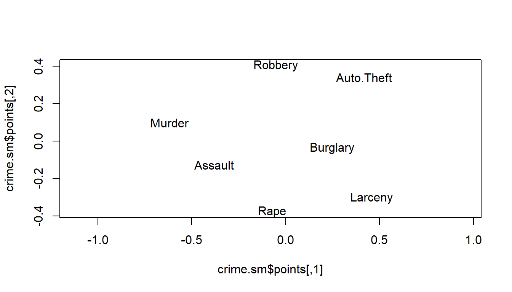

5 Solutions
5.1 Task 1
The steps for implementing Sammon mapping is similar to implementing metric MDS, that is, we need to first convert the inter-correlations into a dissimilarity matrix and then apply the sammon command.
library(MASS);library(smacof)##
## Attaching package: 'MASS'## The following object is masked from 'package:dplyr':
##
## select## Loading required package: plotrix## Loading required package: colorspace## Loading required package: e1071##
## Attaching package: 'smacof'## The following object is masked from 'package:base':
##
## transformcrime.dist <- sim2diss(crimes, method="corr")
set.seed(1)
crime.sm<-sammon(crime.dist,k=2)## Initial stress : 0.06663
## stress after 10 iters: 0.02557, magic = 0.500
## stress after 20 iters: 0.02554, magic = 0.500plot(crime.sm$points,type="n",asp=1)
text(crime.sm$points,labels=names(crimes)) The plot is quite similar to the result obtained from metric MDS, except that the distance between Murder and Assault increases slightly.
5.2 Task 2
- As this is a similarity matrix (larger values indicate the two letters are more likely to cause confusion and thus more similar), the first step is to convert the data into a dissimilarity matrix.
library(smacof)
letter <- read.csv("letter.csv", row.names=1)
letter.dist <- sim2diss(letter, method=max(letter)+1) #z-s_ij
letter.dist <- as.dist(letter.dist)
letter.dist## C D G H M N Q
## D 16
## G 9 19
## H 19 17 18
## M 19 18 19 2
## N 19 17 20 3 5
## Q 12 1 12 20 19 13
## W 20 16 19 16 3 8 17Because we have deduced dissimilarities from similarities, the absolute dissimilarities delta_ij depend on the value of personally chosen z. This is the case where the non-metric MDS makes most sense.
#nonmetric MDS
#2D
set.seed(1)
letter.nmds2 <- mds(letter.dist, ndim=2, type="ordinal")
plot(letter.nmds2,asp=1)plot(letter.nmds2,plot.type="Shepard")letter.nmds2$stress## [1] 0.05971# Kruskal (1964) gave following advise about stress values based on his experience:
# Stress Goodness-of-fit
# 0.200 poor
# 0.100 fair
# 0.050 good
# 0.025 excellent
# 0.000 perfect
# More recent articles caution against using a table like this since acceptable values of stress depends on the quality of the distance matrix and the number of objects in that matrix.
#3D
set.seed(1)
letter.nmds3 <- mds(letter.dist, ndim=3, type="ordinal")
library(rgl)##
## Attaching package: 'rgl'## The following object is masked from 'package:plotrix':
##
## mtext3d# plot3d(letter.nmds3$conf[,1],letter.nmds3$conf[,2],
# letter.nmds3$conf[,3],type="",
# xlab="Axis 1",ylab="Axis 2",zlab="Axis 3",asp=1)
text3d(letter.nmds3$conf[,1],letter.nmds3$conf[,2],
letter.nmds3$conf[,3],texts=names(letter.dist),asp=1)
plot(letter.nmds3,plot.type="Shepard")letter.nmds3$stress## [1] 0.01768N_dim <- 1:(nrow(letter)-1)
letter.nmds <- matrix(nrow=length(N_dim),ncol=2)
for (i in N_dim){
letter.nmds[i,1] <- i
letter.nmds[i,2] <- mds(letter.dist, ndim=i, type="ordinal")$stress
}
plot(letter.nmds, type="b", main="scree plot",
xlab="number of dimensions", ylab="stress-1")
The scree plot suggests that using three dimensions could give a relatively small stress value.
Based on the 3D plot in (c), one might argue that C, D, G, Q forms a cluster and H, M, N, W forms another cluster.
When converting confusion to distance, we have introduced the parameter z (maximum value to be subtracted from). Now we will create a function to investigate the effect of z.
Z <- seq(max(letter)+1, by=1, length.out=100)
letter.z <- matrix(nrow=length(Z),ncol=2)
for (i in 1:length(Z)){
letter.dist <- sim2diss(letter,method=Z[i])
set.seed(1)
letter.z[i,1] <- Z[i]
letter.z[i,2] <- mds(letter.dist, ndim=3, type="ordinal")$stress
}
plot(letter.z, xlab="integer z", ylab="stress-1")It is clear that z has a large influence on the stress value.
- To test the sensitivity to initial configuration, we need to change the current way of initialisation, which is classical MDS by default. Specially, we need to use the argument:
init="random"
Seed <- 1:100
letter.seed <- matrix(nrow=length(Seed),ncol=1)
for (i in Seed){
letter.dist <- sim2diss(letter,method=max(letter)+1)
set.seed(i)
letter.seed[i] <- mds(letter.dist,ndim=3,type="ordinal",init="random")$stress
}
hist(letter.seed)5.3 Task 3
- As the variables have different variances, it would be better to use standardised variables when computing the pairwise distances.
apply(employ,2,var)## AGRIC MINING MANU POWER CONSTR SERVICE FINANCE SOCIAL
## 241.6958 0.9410 49.1087 0.1415 2.7080 20.9329 7.8768 46.6426
## TRANS
## 1.9362employ.sd <- scale(employ)
employ.dist <- dist(employ.sd)
employ.dist #to visualise countries as data points## Belgium Denmark France WGerm Ireland Italy Luxem Nether UK
## Denmark 1.951
## France 1.479 2.283
## WGerm 2.036 3.075 1.780
## Ireland 2.645 3.266 2.220 2.819
## Italy 2.807 3.172 2.098 2.893 2.923
## Luxem 2.812 4.127 2.598 2.529 3.347 3.049
## Nether 1.627 1.739 1.754 3.132 2.915 2.919 3.756
## UK 1.858 3.093 2.238 1.929 2.504 3.835 3.123 2.794
## Austria 2.257 3.592 1.943 2.238 2.128 3.018 2.743 2.711 2.289
## Finland 1.807 2.419 2.091 2.332 1.982 3.447 3.698 2.215 1.834
## Greece 4.326 4.152 3.629 4.160 2.990 3.253 4.488 4.385 4.940
## Norway 2.006 2.084 2.926 3.404 3.232 3.418 3.961 2.288 3.265
## Portugal 3.184 3.115 2.255 2.841 2.386 1.843 3.653 3.286 3.848
## Spain 4.123 4.238 3.021 3.794 4.265 3.505 3.971 3.806 4.810
## Sweden 1.631 1.135 2.100 2.345 2.942 3.318 3.834 2.081 2.195
## Switz 2.737 3.701 1.996 2.192 3.521 2.350 3.243 3.119 3.422
## Turkey 8.084 7.456 7.364 7.471 6.517 7.180 8.102 8.292 8.129
## Bulgaria 3.906 4.152 3.411 2.726 3.422 3.124 3.298 4.585 4.031
## Czech 4.106 4.974 3.766 2.956 3.592 3.975 2.876 4.855 3.673
## EGerm 4.076 5.188 4.317 3.092 4.299 4.770 3.421 5.143 3.483
## Hungary 4.897 5.823 4.767 4.275 3.775 5.338 4.149 5.459 4.067
## Poland 4.291 4.585 3.744 3.476 3.159 3.669 3.386 4.771 4.254
## Romania 5.010 5.171 4.028 3.764 3.998 3.683 3.922 5.384 5.063
## USSR 4.210 3.924 4.222 4.049 4.102 3.911 4.447 4.486 4.745
## Yugoslavia 6.451 6.457 5.624 5.803 5.274 6.672 6.361 6.639 6.172
## Austria Finland Greece Norway Portugal Spain Sweden Switz Turkey
## Denmark
## France
## WGerm
## Ireland
## Italy
## Luxem
## Nether
## UK
## Austria
## Finland 1.887
## Greece 3.825 3.788
## Norway 3.124 2.201 4.115
## Portugal 3.002 2.997 1.801 3.555
## Spain 3.479 4.175 3.722 4.727 3.120
## Sweden 3.238 1.937 4.365 2.349 3.188 4.494
## Switz 2.395 3.222 4.231 3.944 2.784 3.025 3.497
## Turkey 8.048 7.531 5.019 8.207 5.710 7.601 7.439 8.119
## Bulgaria 3.501 3.678 3.096 4.111 2.557 3.990 3.848 3.694 6.350
## Czech 3.034 3.803 4.358 4.543 3.856 4.452 4.478 4.037 7.844
## EGerm 3.443 3.887 5.528 4.452 4.874 5.574 4.501 4.460 8.974
## Hungary 3.430 4.039 5.032 5.037 4.985 5.571 5.305 5.356 8.434
## Poland 3.460 3.795 2.812 4.324 2.937 4.039 4.376 4.402 6.243
## Romania 4.191 4.722 3.008 5.442 2.822 3.576 5.004 4.193 5.719
## USSR 4.145 3.795 3.541 3.250 3.526 4.663 4.015 4.807 7.339
## Yugoslavia 5.821 5.730 4.733 7.102 5.175 5.183 6.284 6.350 5.185
## Bulgaria Czech EGerm Hungary Poland Romania USSR
## Denmark
## France
## WGerm
## Ireland
## Italy
## Luxem
## Nether
## UK
## Austria
## Finland
## Greece
## Norway
## Portugal
## Spain
## Sweden
## Switz
## Turkey
## Bulgaria
## Czech 2.093
## EGerm 3.173 1.843
## Hungary 3.829 2.224 2.737
## Poland 1.537 1.972 3.467 2.994
## Romania 1.882 2.936 4.536 4.439 1.926
## USSR 2.459 3.326 3.869 4.241 2.585 3.763
## Yugoslavia 5.872 6.407 7.448 6.563 5.422 5.099 7.024employ.dist.var <- dist(t(employ.sd))
employ.dist.var #to visualise variables as data points## AGRIC MINING MANU POWER CONSTR SERVICE FINANCE SOCIAL
## MINING 6.943
## MANU 9.141 5.267
## POWER 8.367 5.452 5.544
## CONSTR 8.770 7.161 5.028 6.856
## SERVICE 9.319 8.356 6.309 6.317 5.674
## FINANCE 7.810 8.493 7.602 6.671 7.013 5.632
## SOCIAL 9.346 8.003 6.503 6.586 6.488 4.625 6.680
## TRANS 8.846 6.494 5.698 5.589 5.533 6.374 7.893 4.648As we have created the distance matrix directly from the data, metric MDS would be a better choice.
There are three types of metric MDS covered in the lecture.
Classical MDS (cmdscale) is omitted as it is equivalent to PCA (check that!)
Metric MDS computed using mds are explained in Task 2. The steps for this task are similar and hence details are omitted.
There are a few differences when using Sammon mapping, which are explained below.
#Sammon
library(MASS)
employ.sm <- sammon(employ.dist.var, k=2)## Initial stress : 0.14054
## stress after 10 iters: 0.05042, magic = 0.500
## stress after 20 iters: 0.05023, magic = 0.500
## stress after 30 iters: 0.05019, magic = 0.500plot(employ.sm$points, type="n", xlab="Axis 1", ylab="Axis 2",asp=1)
text(employ.sm$points, labels=names(employ.dist.var))As sammon is not from the smacof library, we cannot easily plot the Shepard diagram by setting plot.type="Shepard". Instead, an additional command Shepard is needed to calculate
plot(as.vector(employ.dist.var),as.vector(dist(employ.sm$points)),pch=16,
xlab="Dissimilarities", ylab="Configuration Distances")
employ.sm.fit <- lm(as.vector(dist(employ.sm$points))~as.vector(employ.dist.var))
abline(employ.sm.fit,col="red",lty=2)There is no clear group structure when applying Sammon mapping on the dissimilarity matrix computed over variables.
When applying Sammon mapping on the dissimilarity matrix computed over countries, it seems that Turkey locates far away from the remaining countries, indicating the potential existence of outliers.
- The closer the configuration points are, the more similar the variables are.